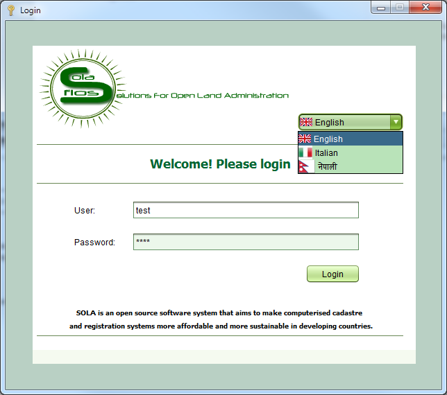

Launch the SOLA Desktop from the shortcut on your desktop. At the
SOLA Desktop Login screen, enter your SOLA username and password and
click the Login button. If you are not sure what your SOLA username,
or require your password to be reset, contact the SOLA System Administrator.

Also See